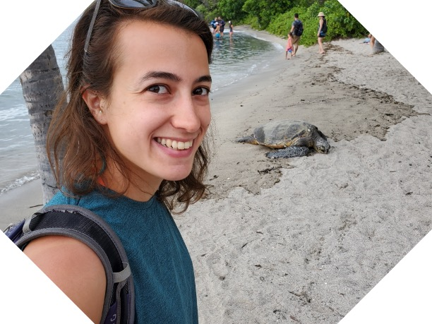

|
Noa Moriel
I am both a PhD candidate at Dr. Mor Nitzan's lab at the Hebrew University of Jerusalem and a research scientist at IBM.
I am fascinated by the principles of design and the emergence of complexity within both natural and biological systems, as well as in artificial environments and machine learning contexts.
Prior to this I completed both BSc and MSc supervised by Prof. Nir Friedman, worked as an algorithmic developer at Mobileye and worked as a research scientist both at the Broad Institute and at Harvard University.
Email /
Google Scholar /
CV /
LinkedIn /
Twitter
|

|
|
|
Let's do the time-warp-attend: learning topological invariants of dynamical systems
Noa Moriel*,
Matthew Ricci*,
Mor Nitzan
ICLR 2024
Paper /
Code
We introduce time-warp-attend, a deep-learning framework that classifies dynamical regimes and detects bifurcation boundaries in systems ranging from electrical circuits to chemical oscillators by learning topologically invariant features. We demonstrate its effectiveness on real-world data including gene expression dynamics in pancreatic development.
|
|
|
Optimal sequencing budget allocation for trajectory reconstruction of single cells
Noa Moriel*,
Edvin Memet*,
Mor Nitzan
Code
The challenge of charting cellular trajectories over gene expression can be alleviated by increasing either the number of cells sampled along the trajectory (breadth) or the sequencing depth, i.e. the number of reads captured per cell (depth). Here, we study the optimal allocation of a fixed sequencing budget to optimize the recovery of cellular trajectory attributes through empirical subsampling experiments across diverse datasets.
|
|
|
Phase2vec: dynamical systems embedding with a physics-informed convolutional network
Matthew Ricci,
Noa Moriel,
Zoe Piran,
Mor Nitzan
ICLR 2023 Oral
Paper /
Code
We propose phase2vec, an unsupervised embedding method that learns to represent dynamical systems through convolutional networks, enabling accurate classification of systems into key physical classes (e.g., stability, energy conservation) and the prediction of equations from data, with applications demonstrated in meteorological data analysis.
|
|
|
Emergence of division of labor in tissues through cell interactions and spatial cues
Miri Adler*,
Noa Moriel*,
Aleksandrina Goeva*, ...,
Aviv Regev,
Ruslan Medzhitov,
Mor Nitzan
Cell Reports
Paper /
Code
We study the spatial organization of division of labor in the tissue as a function of the underlying directing mechanism, particularly focusing on spatial gradients and cellular interactions.
We find both spatial proximity of specialist cells, and dense archetype crosstalk networks to suggest involvement of cell interactions.
We demonstrate these distinct strategies for intestine enterocytes and colon fibroblasts.
|
|
|
TACCO: Unified annotation transfer and decomposition of cell identities for single-cell and spatial omics
Simon Mages*,
Noa Moriel*,...,
Johanna Klughammer,
Aviv Regev,
Mor Nitzan
Nature Biotechnology
Paper /
Code
TACCO, a computational framework that transfers annotations from a reference data to multi omic modalities at large scales.
TACCO's annotations are based on broad gene expression similarity to the reference data and therefore can be used across diverse setups, e.g. for aggregated expression decomposition, predicting cell fates of progenitor cells, overcoming technical read dropout and more.
|
|
|
NovoSpaRc: Flexible Spatial Reconstruction of Single-Cell Gene Expression with Optimal Transport
Noa Moriel*,
Enes Senel*,
Nir Friedman,
Nikolaus Rajewsky,
Nikos Karaiskos,
Mor Nitzan
Nature Protocols
Paper /
Code
novoSpaRc is an optimal transport algorithm that spatially reconstructs tissues given scRNA-seq data, using a structural correspondence assumption, and optionally, by including a reference atlas. We delve into the novoSpaRc algorithm, provide additional examples and a step-by-step guide towards optimal reconstruction using these strategies of the Drosophila embryo reconstruction.
|
|
|
Supervising assistant of Computational Methods in Molecular Biology Lab [2024]
Introduction to Machine Learning [Spring 2023]
Introduction to Artifical Intelligence [Spring 2022]
Genomics [Spring 2017]
Algorithms in Computational Biology [Fall 2017]
|
I have a precious little daughter, Naya.
Sports keep me sane. I enjoy running, swimming, and hiking.
I love experimenting with arts, including woodworking, pottery, glass art, printing, as well as with regrowing various plants.
These are my awesome brothers: postdoc Avraham Moriel, MD PhD Nadav Moriel, and (fresh scholar) Gilad Moriel.
A podcast episode I found especially inspiring: Joe Rogan interviewing singer-songwriter Jewel
Favorite soundtracks: Gardians of the Galaxy and Hamilton.
|
|